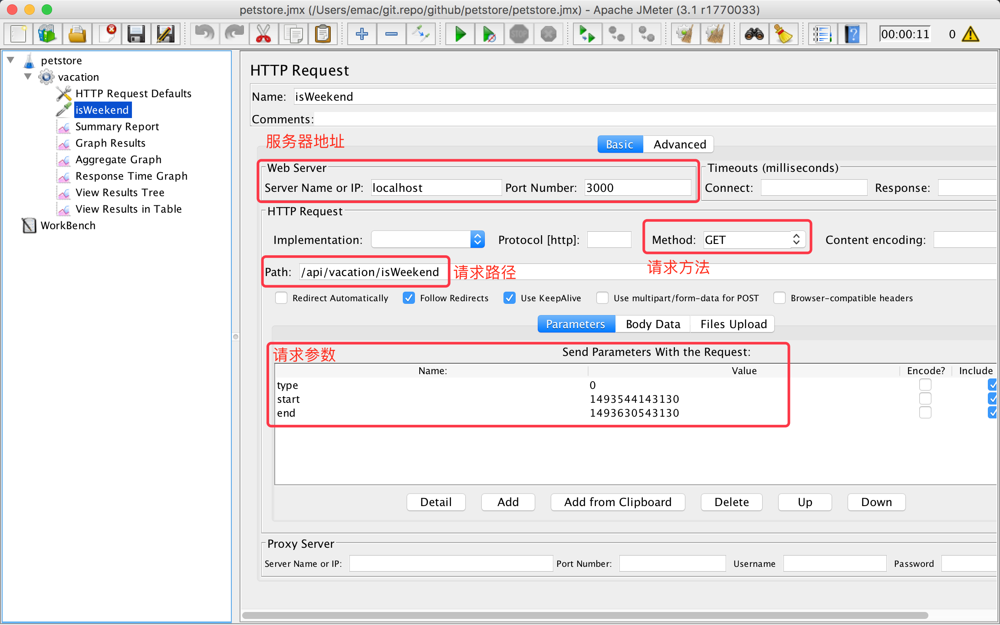

<!DOCTYPE HTML>
<html>
<head><meta name="generator" content="Hexo 3.9.0">
  <meta charset="utf-8">
  <meta http-equiv="X-UA-Compatible" content="IE=edge">
  <meta name="apple-mobile-web-app-capable" content="yes">
  <meta name="apple-mobile-web-app-status-bar-style" content="black">
  <meta name="google-site-verification" content>
  
  <title>面向开发的测试技术（二）：性能测试</title>
  <meta name="author" content="Emac">
   <meta name="description" content="引子：自上世纪末Kent Beck提出TDD(Test-Driven Development)开发理念以来，开发和测试的边界变的越来越模糊，从原本上下游的依赖关系，逐步演变成你中有我、我中有你的互赖关系，甚至很多公司设立了新的QE(Quality Engineer)职位。和传统的QA(Quality">
  

  <meta property="og:title" content="面向开发的测试技术（二）：性能测试">
  <meta name="viewport" content="width=device-width, initial-scale=1, maximum-scale=1">
  <meta property="og:site_name" content="Emac">
 <meta property="og:image" content="undefined">
  
  <link href="/apple-touch-icon-precomposed.png" sizes="180x180" rel="apple-touch-icon-precomposed">
  <link rel="alternate" href="/atom.xml" title="Emac" type="application/atom+xml">
  <link rel="stylesheet" href="//cdn.bootcss.com/bootstrap/3.3.6/css/bootstrap.min.css">
  <link rel="stylesheet" href="//cdn.bootcss.com/font-awesome/4.5.0/css/font-awesome.min.css">
  <link rel="stylesheet" href="/css/m.min.css">
  <link rel="icon" type="image/x-icon" href="/favicon.ico">
</head>
</html>
<body>
  <div id='wx_pic' style='display:none;'></div>
  <div id="main">
    <div class="behind">
      <div class="back">
        <a href="/" class="black-color"><i class="fa fa-times" aria-hidden="true"></i></a>
      </div>
      <div class="description">
        &nbsp;拾贝
      </div>
    </div>
    <div class="container">
      

  <article class="standard post">
    <div class="title">
      
  
    <h1 class="page-title center">
        面向开发的测试技术（二）：性能测试
    </h1>
  


    </div>
    <div class="meta center">
      
<time datetime="2017-05-09T16:00:00.000Z">
  <i class="fa fa-calendar"></i>&nbsp;
  2017-05-10
</time>


    
    &nbsp;
    <i class="fa fa-tag"></i>&nbsp;
    <a href="/categories/arch/">arch</a>


    
    &nbsp;
    <i class="fa fa-tag"></i>&nbsp;
    <a href="/tags/原创/">原创</a>·<a href="/tags/测试/">测试</a>


    </div>
    <hr>
    <div class="picture-container">
      
    </div>
    <blockquote>
<p>引子：自上世纪末Kent Beck提出<a href="https://en.wikipedia.org/wiki/Test-driven_development" target="_blank" rel="noopener">TDD(Test-Driven Development)</a>开发理念以来，开发和测试的边界变的越来越模糊，从原本上下游的依赖关系，逐步演变成你中有我、我中有你的互赖关系，甚至很多公司设立了新的QE(Quality Engineer)职位。和传统的QA(Quality Assurance)不同，QE的主要职责是通过工程化的手段保证项目质量，这些手段包括但不仅限于编写单元测试、集成测试，搭建自动化测试流程，设计性能测试等。可以说，QE身上兼具了QA的质量意识和开发的工程能力。我会从开发的角度分三期聊聊QE这个亦测试亦开发的角色所需的基本技能。</p>
<p>前情概要：</p>
<ul>
<li><a href="http://emacoo.cn/arch/test-mock">面向开发的测试技术（一）：Mock</a></li>
</ul>
</blockquote>
<h2 id="1-什么是性能测试？"><a href="#1-什么是性能测试？" class="headerlink" title="1 什么是性能测试？"></a>1 什么是性能测试？</h2><p>先来看一下维基百科里对性能测试的定义，</p>
<blockquote>
<p>In software engineering, performance testing is in general, a testing practice performed to determine how a system performs in terms of responsiveness and stability under a particular workload. - Wikipedia</p>
</blockquote>
<p>注意上述定义中有三个关键词：</p>
<ul>
<li>responsiveness，即响应时间，请求发出去之后，服务端需要多久才能返回结果，显然响应时间越短，性能越好。</li>
<li>stability，即稳定性，同样的请求，不同时刻发出去，响应时间差别越小，稳定性越好，性能也越好。</li>
<li>workload，即负载，同一时刻服务端收到的请求数量，其中单位时间内<strong>成功处理</strong>的请求数量即吞吐量，吞吐量越大，性能越好。</li>
</ul>
<p>响应时间和吞吐量是衡量应用性能好坏最重要的两个指标。对于绝大多数应用，刚开始的时候，响应时间最短；随着负载的增大，吞吐量快速上升，响应时间也逐渐变长；当负载超过某一个值之后，响应时间会突然呈指数级放大，同时吞吐量也应声下跌，应用性能急剧下降，整个过程如下：</p>
<p></p>
<p><em>图片出处：<a href="http://coolshell.cn/articles/17381.html" target="_blank" rel="noopener">性能测试应该怎么做？</a></em></p>
<h2 id="2-性能测试的目的"><a href="#2-性能测试的目的" class="headerlink" title="2 性能测试的目的"></a>2 性能测试的目的</h2><p>了解了应用性能变化的普遍规律，性能测试的目的也就有了答案：针对某一应用，找出响应时间和吞吐量的量化关系，找到应用性能变化的临界点。你可能会问，知道了这些有什么用呢？在我看来，至少有3个层面的好处：</p>
<p>第一，有的放矢，提高资源利用率。性能测试的过程就是量化性能的过程，有了各种性能数据，你才能对应用性能进行定量分析，找到并解决潜在的性能问题，从而提高资源利用率。</p>
<p>第二，科学的进行容量规划。找到了应用性能变化的临界点，也就很容易找到单节点的性能极限，这是进行容量规划的重要决策依据。比如某一应用在单节点下的极限吞吐量是2000 QPS，那么面对10000 QPS的流量，至少需要部署5个节点。</p>
<p>第三，改善QoS（Quality of Service）。很多时候，资源是有限的，面对超出服务能力的流量，为了保证QoS，必须做出取舍（比如限流降级，开关预案等），应用性能数据是设计QoS方案的重要依据。</p>
<h2 id="3-性能测试的三个常见误区"><a href="#3-性能测试的三个常见误区" class="headerlink" title="3 性能测试的三个常见误区"></a>3 性能测试的三个常见误区</h2><h3 id="误区1：只看平均值，不懂TP95-TP99"><a href="#误区1：只看平均值，不懂TP95-TP99" class="headerlink" title="误区1：只看平均值，不懂TP95/TP99"></a>误区1：只看平均值，不懂TP95/TP99</h3><p>用平均值来衡量响应时间是性能测试中最常见的误区。从第1小节的插图可以看出，随着吞吐量的增大，响应时间会逐渐变长，当达到最大吞吐量之后，响应时间会开始加速上升，尤其是排在后面的请求。在这个时刻，如果只看平均值，你往往察觉不到问题，因为大部分请求的响应时间还是很短的，慢请求只占一个很小的比例，所以平均值变化不大。但实际上，可能已经有超过1%，甚至5%的请求的响应时间已经超出设计的范围了。</p>
<p>更科学、更合理的指标是看TP95或者TP99响应时间。TP是Top Percentile的缩写，是一个统计学术语，用来描述一组数值的分布特征。以TP95为例，假设有100个数字，从小到大排序之后，第95个数字的值就是这组数字的TP95值，表示至少有95%的数字是小于或者等于这个值。</p>
<p>以一次具体的性能测试为例，</p>
<p></p>
<p></p>
<p>总共有1000次请求，平均响应时间是58.9ms，TP95是123.85ms（平均响应时间的2.1倍），TP99是997.99ms（平均响应时间的16.9倍）。假设应用设计的最大响应时间是100ms，单看平均时间是完全符合要求的，但实际上已经有超过50个请求失败了。如果看TP95或者TP99，问题就很清楚了。</p>
<h3 id="误区2：只关注响应时间和吞吐量，忽视请求成功率"><a href="#误区2：只关注响应时间和吞吐量，忽视请求成功率" class="headerlink" title="误区2：只关注响应时间和吞吐量，忽视请求成功率"></a>误区2：只关注响应时间和吞吐量，忽视请求成功率</h3><p>虽说衡量应用性能好坏最主要是看响应时间和吞吐量，但这里有个大前提，所有请求（如果做不到所有，至少也要绝大多数请求，比如99.9%）都被成功处理了，而不是返回一堆错误码。如果不能保证这一点，那么再低的响应时间，再高的吞吐量都是没有意义的。</p>
<h3 id="误区3：忘了测试端也存在性能瓶颈"><a href="#误区3：忘了测试端也存在性能瓶颈" class="headerlink" title="误区3：忘了测试端也存在性能瓶颈"></a>误区3：忘了测试端也存在性能瓶颈</h3><p>性能测试的第三个误区是只关注服务端，而忽略了测试端本身可能也存在限制。比如测试用例设置了10000并发数，但实际运行用例的机器最大只支持5000并发数，如果只看服务端的数据，你可能会误以为服务端最大就只支持5000并发数。如果遇到这种情况，或者换用更高性能的测试机器，或者增加测试机器的数量。</p>
<h2 id="4-如何进行性能测试？"><a href="#4-如何进行性能测试？" class="headerlink" title="4 如何进行性能测试？"></a>4 如何进行性能测试？</h2><p>介绍完性能测试相关的一些概念之后，再来看一下有哪些工具可以进行性能测试。</p>
<h3 id="4-1-JMeter"><a href="#4-1-JMeter" class="headerlink" title="4.1 JMeter"></a>4.1 JMeter</h3><p><a href="http://jmeter.apache.org/" target="_blank" rel="noopener">JMeter</a>可能是最常用的性能测试工具。它既支持图形界面，也支持命令行，属于黑盒测试的范畴，对非开发人员比较友好，上手也非常容易。图形界面一般用于编写、调试测试用例，而实际的性能测试建议还是在命令行下运行。</p>
<p></p>
<p><em>并发设置</em></p>
<p></p>
<p><em>请求参数</em></p>
<p></p>
<p><em>结果报表</em></p>
<p>命令行下的常用命令：</p>
<ul>
<li>设置JVM参数：JVM_ARGS=”-Xms2g -Xmx2g”</li>
<li>运行测试：jmeter -n -t &lt;jmx_file></li>
<li>运行测试同时生成报表：jmeter -n -t &lt;jmx_file> -l &lt;log_file> -e -o &lt;report_dir></li>
</ul>
<p>除了JMeter，其他常用的性能测试工具还有<a href="http://httpd.apache.org/docs/2.2/programs/ab.html" target="_blank" rel="noopener">ab</a>, <a href="http://www.acme.com/software/http_load/" target="_blank" rel="noopener">http_load</a>, <a href="https://github.com/wg/wrk" target="_blank" rel="noopener">wrk</a>以及商用的<a href="http://www8.hp.com/us/en/software-solutions/loadrunner-load-testing/index.html" target="_blank" rel="noopener">LoaderRunner</a>。</p>
<h3 id="4-2-JMH"><a href="#4-2-JMH" class="headerlink" title="4.2 JMH"></a>4.2 JMH</h3><p>如果测试用例比较复杂，或者负责性能测试的人员具有一定的开发能力，也可以考虑使用一些框架编写单独的性能测试程序。对于Java开发人员而言，<a href="http://openjdk.java.net/projects/code-tools/jmh/" target="_blank" rel="noopener">JMH</a>是一个推荐的选择。类似于JUnit，JMH提供了一系列注解用于编写测试用例，以及一个运行测试的引擎。事实上，即将发布的<a href="https://dzone.com/articles/microbenchmarking-comes-to-java-9" target="_blank" rel="noopener">JDK 9</a>默认就会包含JMH。</p>
<p>下面是我GitHub上的<a href="https://github.com/emac/spring-boot-features-demo" target="_blank" rel="noopener">示例工程</a>里的一个例子，</p>
<figure class="highlight java"><table><tr><td class="gutter"><pre><span class="line">1</span><br><span class="line">2</span><br><span class="line">3</span><br><span class="line">4</span><br><span class="line">5</span><br><span class="line">6</span><br><span class="line">7</span><br><span class="line">8</span><br><span class="line">9</span><br><span class="line">10</span><br><span class="line">11</span><br><span class="line">12</span><br><span class="line">13</span><br><span class="line">14</span><br><span class="line">15</span><br><span class="line">16</span><br><span class="line">17</span><br><span class="line">18</span><br><span class="line">19</span><br><span class="line">20</span><br><span class="line">21</span><br><span class="line">22</span><br><span class="line">23</span><br><span class="line">24</span><br><span class="line">25</span><br><span class="line">26</span><br><span class="line">27</span><br><span class="line">28</span><br><span class="line">29</span><br><span class="line">30</span><br><span class="line">31</span><br><span class="line">32</span><br><span class="line">33</span><br><span class="line">34</span><br><span class="line">35</span><br><span class="line">36</span><br></pre></td><td class="code"><pre><span class="line"><span class="meta">@BenchmarkMode</span>(Mode.Throughput)</span><br><span class="line"><span class="meta">@Fork</span>(<span class="number">1</span>)</span><br><span class="line"><span class="meta">@Threads</span>(Threads.MAX)</span><br><span class="line"><span class="meta">@State</span>(Scope.Benchmark)</span><br><span class="line"><span class="meta">@Warmup</span>(iterations = <span class="number">1</span>, time = <span class="number">3</span>)</span><br><span class="line"><span class="meta">@Measurement</span>(iterations = <span class="number">3</span>, time = <span class="number">3</span>)</span><br><span class="line"><span class="keyword">public</span> <span class="class"><span class="keyword">class</span> <span class="title">VacationClientBenchmark</span> </span>&#123;</span><br><span class="line"></span><br><span class="line">    <span class="keyword">private</span> VacationClient vacationClient;</span><br><span class="line"></span><br><span class="line">    <span class="meta">@Setup</span></span><br><span class="line">    <span class="function"><span class="keyword">public</span> <span class="keyword">void</span> <span class="title">setUp</span><span class="params">()</span> </span>&#123;</span><br><span class="line">        VacationClientConfig clientConfig = <span class="keyword">new</span> VacationClientConfig(<span class="string">"http://localhost:3000"</span>);</span><br><span class="line">        vacationClient = <span class="keyword">new</span> VacationClient(clientConfig);</span><br><span class="line">    &#125;</span><br><span class="line"></span><br><span class="line">    <span class="meta">@Benchmark</span></span><br><span class="line">    <span class="function"><span class="keyword">public</span> <span class="keyword">void</span> <span class="title">benchmarkIsWeekend</span><span class="params">()</span> </span>&#123;</span><br><span class="line">        VacationRequest request = <span class="keyword">new</span> VacationRequest();</span><br><span class="line">        request.setType(PERSONAL);</span><br><span class="line">        OffsetDateTime lastSunday = OffsetDateTime.now().with(TemporalAdjusters.previous(SUNDAY));</span><br><span class="line">        request.setStart(lastSunday);</span><br><span class="line">        request.setEnd(lastSunday.plusDays(<span class="number">1</span>));</span><br><span class="line"></span><br><span class="line">        Asserts.isTrue(vacationClient.isWeekend(request).isSuccess());</span><br><span class="line">    &#125;</span><br><span class="line"></span><br><span class="line">    <span class="comment">// 仅限于IDE中运行</span></span><br><span class="line">    <span class="function"><span class="keyword">public</span> <span class="keyword">static</span> <span class="keyword">void</span> <span class="title">main</span><span class="params">(String[] args)</span> <span class="keyword">throws</span> RunnerException </span>&#123;</span><br><span class="line">        Options opt = <span class="keyword">new</span> OptionsBuilder()</span><br><span class="line">                .include(VacationClientBenchmark<span class="class">.<span class="keyword">class</span>.<span class="title">getSimpleName</span>())</span></span><br><span class="line"><span class="class">                .<span class="title">build</span>()</span>;</span><br><span class="line"></span><br><span class="line">        <span class="keyword">new</span> Runner(opt).run();</span><br><span class="line">    &#125;</span><br><span class="line">&#125;</span><br></pre></td></tr></table></figure>
<p>其中：</p>
<ul>
<li>@BenchmarkMode: 性能测试模式，支持Throughput，AverageTime，SingleShotTime等多种模式。</li>
<li>@Fork: 设置运行性能测试的Fork进程数，默认是0，表示共用JMH主进程。</li>
<li>@Threads: 并发数，Threads.MAX表示同系统的CPU核数。</li>
<li>@Warmup和@Measurement: 分别设置预热和实际性能测试的运行轮数，每轮持续的时间等</li>
<li>@Setup和@Benchmark: 等同于JUnit里的@BeforeClass和@Test</li>
</ul>
<p>在命令行下，使用JMH框架编写的性能测试程序只能以Jar包的形式运行（Main函数固定为org.openjdk.jmh.Main），因此一般会针对每个JMH程序单独维护一个项目。如果是Maven项目，可以使用官方提供的jmh-java-benchmark-archetype，如果是Gradle项目，可以使用<a href="https://github.com/melix/jmh-gradle-plugin" target="_blank" rel="noopener">jmh-gradle-plugin</a>插件。</p>
<h2 id="4-小结"><a href="#4-小结" class="headerlink" title="4 小结"></a>4 小结</h2><p>以上就是我对性能测试的一些见解，欢迎你到我的<a href="https://github.com/emac/emac.github.io/issues/2" target="_blank" rel="noopener">留言板</a>分享，和大家一起过过招。下一篇我将聊一下Web的自动化测试，敬请期待。</p>
<h2 id="5-参考"><a href="#5-参考" class="headerlink" title="5 参考"></a>5 参考</h2><ul>
<li><a href="https://segmentfault.com/a/1190000008219543" target="_blank" rel="noopener">关于性能测试的几个要点</a></li>
<li><a href="http://coolshell.cn/articles/17381.html" target="_blank" rel="noopener">性能测试应该怎么做？</a></li>
<li><a href="http://jm.taobao.org/2016/12/23/20161223/" target="_blank" rel="noopener">阿里双十一大促，技术准备只做了这两件事情？</a></li>
<li><a href="http://jm.taobao.org/2016/12/29/20161229/" target="_blank" rel="noopener">阿里资深技术专家丁宇谈双11高可用架构演进之路</a></li>
</ul>


  </article>
  </script>
    <script async src="https://dn-lbstatics.qbox.me/busuanzi/2.3/busuanzi.pure.mini.js">
  </script>
  <div class="busuanzi center">
    页阅读量:&nbsp;<span id="busuanzi_value_page_pv"></span>&nbsp;・&nbsp;
    站访问量:&nbsp;<span id="busuanzi_value_site_pv"></span>&nbsp;・&nbsp;
    站访客数:&nbsp;<span id="busuanzi_value_site_uv"></span>
  </div>


    </div>
  </div>
  <footer class="page-footer"><div class="clearfix">
</div>
<div class="right-foot container">
    <div class="firstrow">
        <a href="#top" >
        <i class="fa fa-arrow-right"></i>
        </a>
        © emacoo.cn 2015-2020
    </div>
    <div class="secondrow">
        <a href="https://github.com/gaoryrt/hexo-theme-pln">
        
        </a>
    </div>
</div>
<div class="clearfix">
</div>
</footer>
  <script src="//cdn.bootcss.com/jquery/2.2.1/jquery.min.js"></script>
<script src="/js/search.js"></script>
<script type="text/javascript">

// comments below to disable loading animation
function revealOnScroll() {
  var scrolled = $(window).scrollTop();
  $(".excerpt, .index-title, .index-meta, p").each(function() {
    var current = $(this),
      height = $(window).outerHeight(),
      offsetTop = current.offset().top;
    (scrolled + height + 50 > offsetTop) ? current.addClass("animation"):'';
  });
}
$(window).on("scroll", revealOnScroll);
$(document).ready(revealOnScroll)

// disqus scripts


// dropdown scripts
$(".dropdown").click(function(event) {
  var current = $(this);
  event.stopPropagation();
  $(current).children(".dropdown-content")[($(current).children(".dropdown-content").hasClass("open"))?'removeClass':'addClass']("open")
});
$(document).click(function(){
    $(".dropdown-content").removeClass("open");
})

// back to top scripts
$("a[href='#top']").click(function() {
  $("html, body").animate({ scrollTop: 0 }, 500);
  return false;
});


var path = "/search.xml";
searchFunc(path, 'local-search-input', 'local-search-result');

</script>

</body>
</html>
